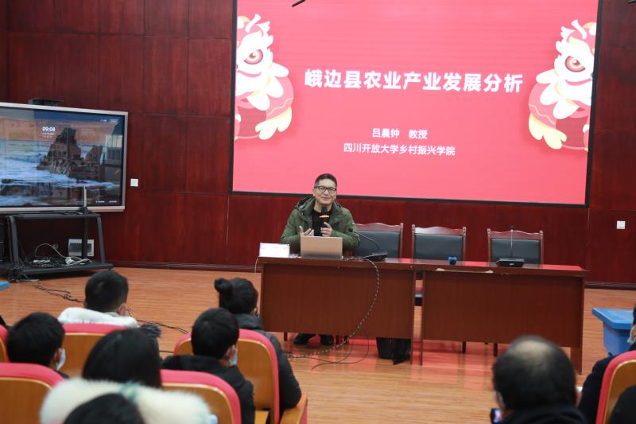
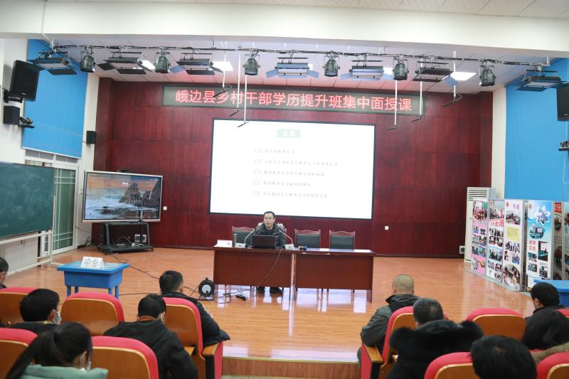

乐山峨边“乡村干部学历提升”是乐山广播电视大学与中共峨边彝族自治县委组织部实施的“乡村振兴人才培养校地战略合作协议”的重要内容之一，旨在培养一批留得住，用得上，能全面带领广大村民脱贫致富奔小康的村组带头人，对峨边彝族自治县全面实施乡村振兴战略，意义重大，影响深远。
应乐山电大邀请，乡村振兴学院选派吕晨钟博士、赵永田博士于26-27日赴乐山峨边为200多名“乡村干部学历提升”学员开展送教下乡服务。吕晨钟博士26日上午结合峨边县情、产业数据对峨边农业产业进行了分析，下午通过分析峨边乡村旅游面临的机遇挑战，提出了发展乡村旅游的对策建议。峨边旅游资源丰富，近年来把“绿色崛起，全域旅游”作为全县经济增长新方向，奋力打造大小凉山乡村振兴新典范。吕晨钟博士的讲座对学员结合本村实际发展乡村旅游提供了借鉴。

赵永田博士于27日上午围绕国家粮食安全战略，向学员解读了习近平总书记关于粮食安全的重要论述，在此基础上分析了我国粮食安全的重要举措、取得的重大成就，以及我国面临的粮食安全挑战。近年来，谁来种地，怎么种地，如何调动种地积极性等问题，一直是困扰我国农村产业发展的难题，严重威胁了我国粮食安全。赵永田博士的讲座有效引导峨边乡村干部领会国家政策方针，调动当地种粮积极性，提高粮食安全意识，为峨边乡村振兴奠定基础。

针对全省实施的“农村带头人学历提升项目”，乡村振兴学院成立“博士服务团”，以国家乡村振兴战略为纲要，围绕三农惠民政策、种养殖技术、农村电商、乡村旅游、乡村文化、村社治理等为各市州电大学员开展专题服务，探索农村带头人复合型创新型人才培养，创新人才培养模式，拓宽人才培养路径，培养真正服务江苏乡村振兴的本土人才。